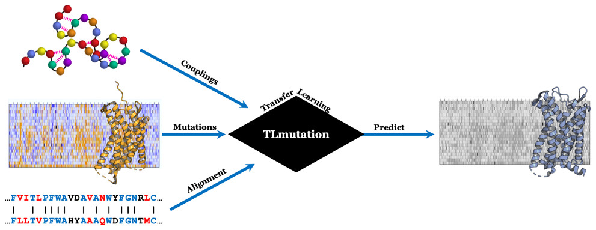

TLMutation: Predicting the Effects of Mutations Using Transfer Learning
Zahra Shamsi*, Matthew Chan*, Diwakar Shukla, The Journal of Physical Chemistry B, 124, 3845-3854, (2020). Full text

Abstract
A reccurring challenge in bioinformatics is predicting the phenotypic consequence of amino acid variation in proteins. With the recent advancements in sequencing techniques, sufficient genomic data has become available to train models that predict the evolutionary statistical energies, but there is still inadequate experimental data to directly predict functional effects. One approach to overcome this data scarcity is to apply transfer learning and train more models with available data sets. In this study, we propose a set of transfer learning algorithms we call TLmutation, which implements a supervised transfer learning algorithm that transfers knowledge from survival data of a protein to a particular function of that protein. This is followed by an unsupervised transfer learning algorithm that extends the knowledge to a homologous protein.
We explore the application of our algorithms in three cases. First, we test the supervised transfer on 17 previously published deep mutagenesis data sets to complete and refine missing data points. We further investigate these data sets to identify which mutations build better predictors of variant functions. In the second case, we apply the algorithm to predict higher-order mutations solely from single point mutagenesis data. Finally, we perform the unsupervised transfer learning algorithm to predict mutational effects of homologous proteins from experimental data sets. These algorithms are generalized to transfer knowledge between Markov random field models. We show the benefit of our transfer learning algorithms to utilize informative deep mutational data and provide new insights into protein variant functions. As these algorithms are generalized to transfer knowledge between Markov random field models, we expect these algorithms to be applicable to other disciplines.